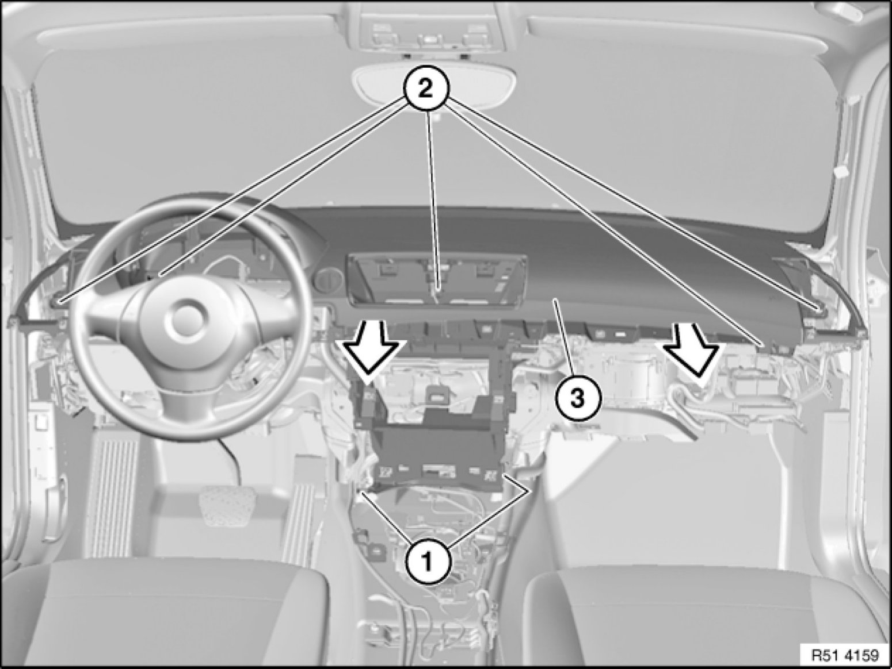
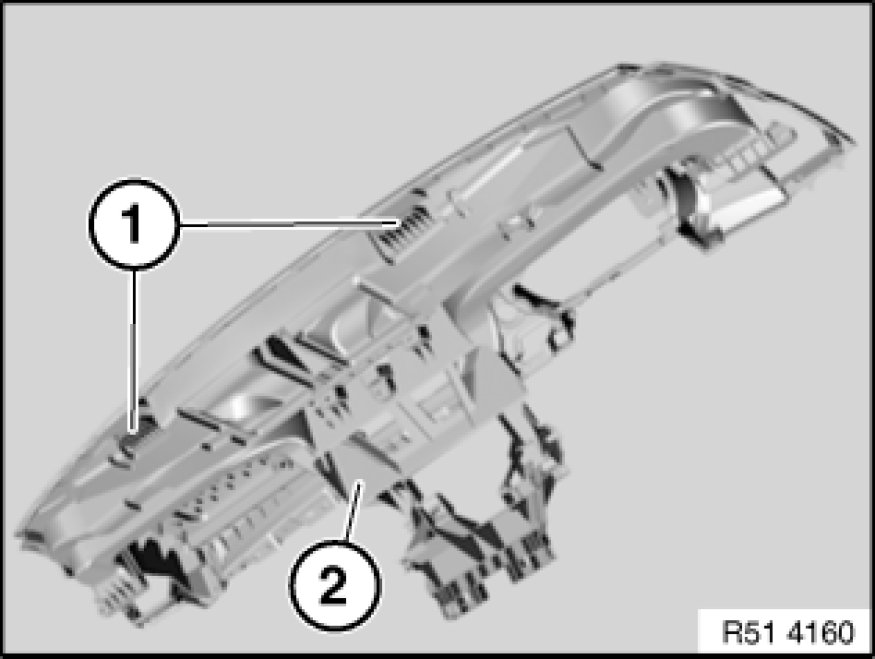

51 45 030 Removing and Installing Instrument Panel Trim
51 45 030 - Removing and installing instrument panel trim

Important!
Read and comply with notes on protection against electrostatic damage (ESD protection) 61 35 ... Notes on ESD Protection (Electro Static Discharge).

Note:
Observe the following instructions to facilitate removal of the instrument panel trim:
- Move front seats back completely and lower
- Move steering column into "lower" and "extended" position
Note:
Description is shown on the E87 by way of example. There may be differences in detail in the case of other models.

Necessary preliminary tasks:
- Clamp off battery negative lead 61 20 900 Disconnecting and Connecting Battery Negative Lead
- Remove both trims for front roof pillar Removing and Installing/Replacing Trim for Roof Pillar at Front (A-pillar), Left or Right
- Remove trim for instrument panel at bottom left 51 45 180 Removing and Installing Trim For Instrument Panel, Bottom Left
- Remove instrument cluster Service and Repair
- Remove insert for radio control key
- Remove Start/Stop switch Service and Repair
- Remove steering column cover 32 31 020 Removing and Installing/Replacing Lower Section of Steering Column Trim
- Remove centre console switch cluster 61 31 054 Removing and Installing/Replacing Centre Console Control Panel (With CCC/ASK, CIC)
- Remove operator unit for heating and air conditioning system
- Remove right glovebox with housing 51 16 366 Removing and Installing Right Glovebox With Housing
- Remove airbag module on front passenger side 72 12 000 Removing and Installing/Replacing Airbag Module on Passenger Side
- Remove storage compartment 51 16 200 Removing and Installing Storage Compartment
In appropriate version:
- Remove radio receiver 65 11 080 Removing and Installing/Replacing Radio
- Remove Car Communication Computer
- Remove Central Information Display
- Remove audio system controller
- Remove solar sensor

Release screws (1).
Unfasten screws (2).
Pull back instrument panel trim (3) in direction of arrow.
If necessary, disconnect available plug connections and remove instrument panel trim (3).

Installation Note:
Make sure guides (1) of instrument panel trim (2) are correctly seated in mountings.
Make sure seals are correctly seated on air ducts.